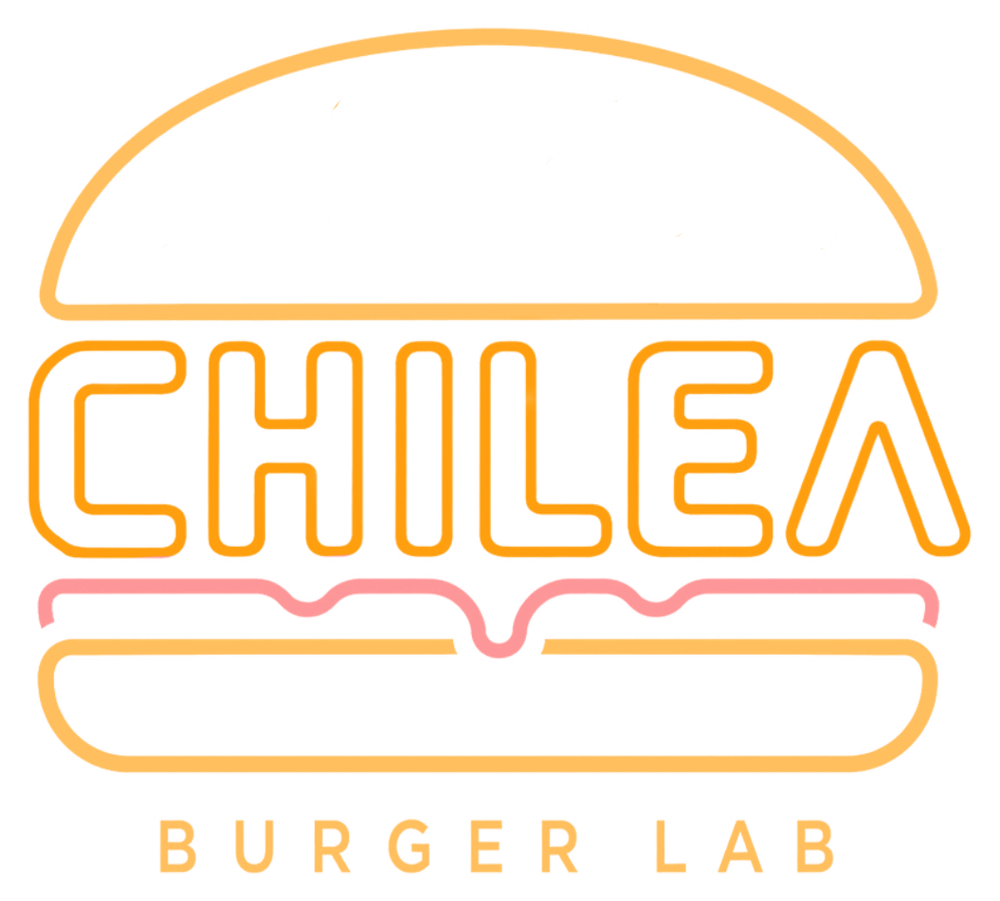

La
Grifería
Paseo Real Marina · Aguadilla, Puerto Rico
Del Grifo
Nomada de Aniversario
Cervezas Camacho 9%ABV · Imperial IPA 12oz
$7
Bridges
Cervezas Camacho 5.4%ABV · Wheat Ale 12oz
$7
Pelicano
Cervezas Camacho 5.4%ABV · Session IPA 12oz
$7
Capitana
Cervezas Camacho 5.2%ABV · Black Lager 12oz
$7
Capitana Light
Cervezas Camacho 4.5%ABV · Light Lager 12oz
$7
Amapola
Cervezas Callejón 4.9%ABV · Sour Ale 12oz
$8
Ocean Mambo
Ocean Lab 4.4%ABV · Wheat Beer 12oz
$7
Medalla
Cervecera de Puerto Rico 4.2%ABV · Light Lager 12oz
$4
Sipi Mead
Colonia Meadery 7%ABV · Mead 12oz
$11
Kombucha
Fermento Comio 0%ABV · Lavanda Limón 12oz
$8
Pide en 16oz
+$2
Rare Candy Creations
$7
www.lagriferiapr.com
Tragos
Absolut
12oz
$7
Jameson
12oz
$7
Espolón
12oz
$7
Latas
Santurce en Lata
Santurce Brewery
$7
Pinot Noir
The Float Project 13.5%ABV · 250ml
$8
Pinot Grigio
The Float Project 12%ABV · 250ml
$8
Cava
Dibon 11%ABV · Brut Selección 187ml
$9
Smash Burgers
Sencillo
Carne, queso, cebollas & Chilea Sauce
$9
Doble
Doble carne, queso, cebollas & Chilea Sauce
$12
+ With Fries
$3
+ Loaded
$3
+ Bacon
$2
+ Pan Mallorca
$2
+ Ensalada
$1
Loaded: queso · bacon · cebolla · Chilea Sauce

Carne, queso,
cebollas &
Chilea Sauce
www.lagriferiapr.com
Alitas
Media docena
BBQ · Ranch
$12
Docena
BBQ · Ranch
$22
De la Cocina
Chilea Fries Lab
Smash · bacon · queso · cebolla · salsa Chilea
$10
Dumplings
Sweet Chili
$8
Fatty Patties
All American
Lettuce, homemade pickles, caramelized onions & American cheese
$14.50
LaChona Burger
American cheese, lettuce & BBQ pulled pork
$15.50
Drip JAM
Lettuce, homemade bacon, tomato & onion jam, Swiss cheese
$16.50
+ Bacon Slices
+ Upgrade a Cheddar
Double smash de carne fresca, nunca congelada · desde 2017
Siempre con
Chona
Special Sauce
@lachonaft · chonagroup.com
Tots
Tater Tots
Golden and crispy · 4 oz
$5
Loaded Tater Tots
Pulled pork, guava BBQ & salsa cremosa de cheddar 100%
$11